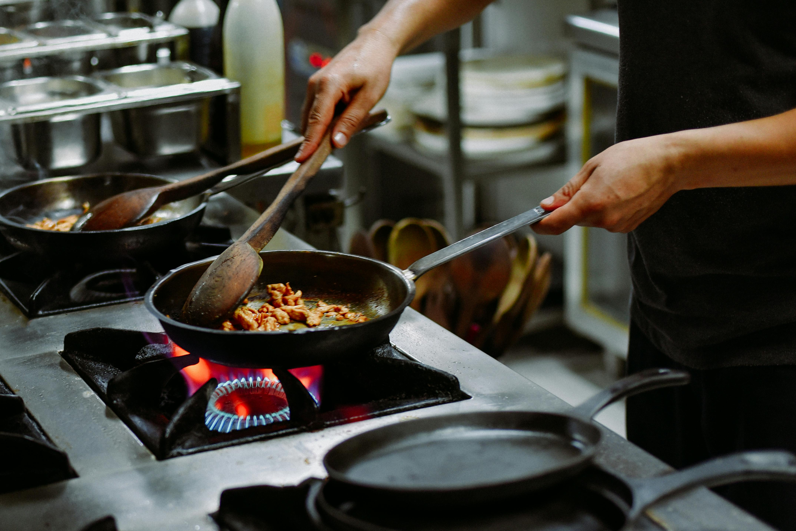
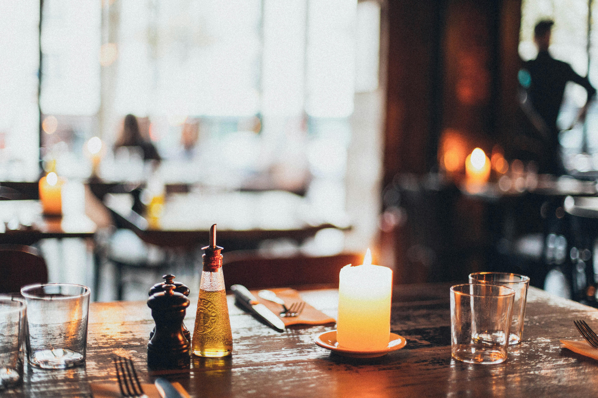

Small Plates
Sea Salt Edamame
Steamed young soybean pods tossed in Maldon smoked sea salt.
Downtown Café & Bistro
Ember & Grain brings together house-roasted coffee, Japanese-inspired comfort food, and a warm evening bistro experience in one downtown gathering place.


Morning at Ember
Start the day with house-roasted espresso, warm wood tones, and breakfast-friendly service for downtown commuters, remote workers, and early meetings.
Order Pickup →Evening Experience
As the lights dim, Ember & Grain shifts into a relaxed evening bistro with shareable plates, seasonal entrées, and space for date nights, small groups, and private gatherings.

Visit Ember & Grain
Located downtown with easy access for lunch meetings, evening dinners, and weekend brunch.
Address
412 North Meridian St, Suite 10
Downtown Metro
Phone
(555) 123-4567
Email
hello@emberandgrain.example
Hours
Mon – Thu: 7:00 AM – 9:00 PM
Fri – Sat: 7:00 AM – 11:00 PM
Sun: 8:00 AM – 3:00 PM (Brunch Only)